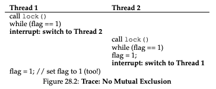
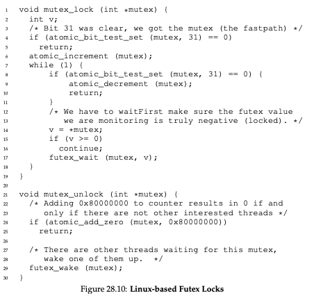

OSTEP: Locks¶
This is a summary of most of the sections in Chapter 27 (“Locks”) of “Operating Systems: Three Easy Pieces”.
It describes how locks are implemented using instructions provided by the hardware and system calls provided by the operating system. A simple solution is to allow a program to enable and disable interrupts, but this has several problems. Another approach is to use a flag without any hardware primitives, but we can’t get a correct solution this way. The Test-And-Set, Compare-And-Swap and Load-Linked / Store-Conditional instructions can each be used to build spin locks. The Fetch-And-Add instruction can be used to build a ticket lock. With a queue, some system calls to make threads sleep and wake them up, and an instruction like Test-And-Set, a lock can be built that avoids a lot of spin waiting.
Introduction¶
We would like to execute a sequence of instructions atomically, but can’t due to:
Presence of interrupts on a single processor
Multiple threads executing on multiple processors concurrently
The lock solves this problem. We put a lock around a critical section so that the code in that critical section executes atomically.
Locks: The Basic Idea¶
A lock is primarily a variable that holds the state “free” or “acquired”. If a thread calls lock() and the lock is free, then the thread acquires the lock and is said to be the owner of the lock. If another thread calls lock() and the lock has already been acquired by another thread, then the function does not return until the lock is free and can be acquired by the caller thread.
Evaluating Locks¶
The goals of a lock:
Correctness: “Basically, does the lock work, preventing multiple threads from entering a critical section?”
Fairness: “Does each thread contending for the lock get a fair shot at acquiring it once it is free?”
Performance: “time overheads added by using the lock”
There are a few different scenarios under which to evaluate performance:
No contention: “when a single thread is running and grabs and releases the lock, what is the overhead of doing so?”
Contention on a single CPU
Contention on multiple CPUs
Controlling interrupts¶
We first present a very simple solution to building a lock assuming primitives to enable and disable interrupts:
void lock() {
DisableInterrupts();
}
void unlock() {
EnableInterrupts();
}
Unfortunately, this approach has several downsides:
It requires the thread to perform a privileged operation: “a greedy program could call lock() at the beginning of its execution and thus monopolize the processor; worse, an errant or malicious program could call lock() and go into an endless loop”
It doesn’t work on multiprocessors
It’s inefficient: “Compared to normal instruction execution, code that masks or unmasks interrupts tends to be executed slowly by modern CPUs”
A Failed Attempt: Just Using Loads/Stores¶
Here is another attempt at building a lock that doesn’t work:
typedef struct __lock_t { int flag; } lock_t;
void init(lock_t *mutex) {
// 0 -> lock is available, 1 -> held
mutex->flag = 0;
}
void lock(lock_t *mutex) {
while (mutex->flag == 1) // TEST the flag
; // spin-wait (do nothing)
mutex->flag = 1; // now SET it!
}
void unlock(lock_t *mutex) {
mutex->flag = 0;
}
It has 2 problems: correctness and performance.
For correctness, Figure 28.2 shows an example of an execution where the lock does not provide mutual exclusion:

For performance, the thread waiting to acquire a lock that is already held: “endlessly checks the value of flag, a technique known as spin-waiting” and “Spin-waiting wastes time waiting for another thread to release a lock.”
Building Working Spin Locks with Test-And-Set¶
We introduce one example of hardware support for building locks in the form of an instruction called test-and-set. The instruction executes the following code atomically:
int TestAndSet(int *old_ptr, int new) {
int old = *old_ptr; // fetch old value at old_ptr
*old_ptr = new; // store ’new’ into old_ptr
return old; // return the old value
}
We can use it to build a lock as follows:
typedef struct __lock_t {
int flag;
} lock_t;
void init(lock_t *lock) {
// 0: lock is available, 1: lock is held
lock->flag = 0;
}
void lock(lock_t *lock) {
while (TestAndSet(&lock->flag, 1) == 1)
; // spin-wait (do nothing)
}
void unlock(lock_t *lock) {
lock->flag = 0;
}
Suppose we have a single thread that tries to acquire the lock. The lock flag will start at 0. TestAndSet will return the old value (0), so the function will not start spin waiting, but it will also set the flag to 1. Now suppose we have another thread that tries to acquire the lock while it’s held by another thread. The value of the flag will be 1. TestAndSet will return the old value (1) and set the flag to 1 again. It will keep setting the flag to 1 until the thread holding the lock releases it and sets the flag to 0.
This is called a spin lock. In order to work correctly, it assumes a preemptive scheduler, i.e., one that “will interrupt a thread via a timer, in order to run a different thread, from time to time”, because “Without preemption, spin locks don’t make much sense on a single CPU, as a thread spinning on a CPU will never relinquish it.”
Evaluating Spin Locks¶
We evaluate the spin lock on the 3 dimensions we discussed earlier:
Correctness: It does provide mutual exclusion.
Fairness: “…spin locks don’t provide any fairness guarantees. Indeed, a thread spinning may spin forever, under contention.”
Performance
Single CPU: Poor performance, because if a thread has acquired a lock, each of the other threads trying to acquire the lock will spin for a CPU cycle before giving up the CPU for another thread to spin.
Multiple CPUs: “spin locks work reasonably well (if the number of threads roughly equals the number of CPUs)… imagine Thread A on CPU 1 and Thread B on CPU 2, both contending for a lock. If Thread A (CPU 1) grabs the lock, and then Thread B tries to, B will spin (on CPU 2). However, presumably the critical section is short, and thus soon the lock becomes available, and is acquired by Thread B. Spinning to wait for a lock held on another processor.”
Compare-And-Swap¶
Besides Test-And-Set, some systems provide an atomic instruction called Compare-And-Swap:
int CompareAndSwap(int *ptr, int expected, int new) {
int original = *ptr;
if (original == expected)
*ptr = new;
return original;
}
We can use it to build a lock as follows:
void lock(lock_t *lock) {
while (CompareAndSwap(&lock->flag, 0, 1) == 1)
; // spin-wait (do nothing)
}
void unlock(lock_t *lock) {
lock->flag = 0;
}
The implementation is exactly the same as for Test-And-Set except for the while loop condition. It’s also a spin lock and the behavior is the same.
Load-Linked and Store-Conditional¶
Besides Test-And-Set and Compare-And-Swap, some systems provide a pair of instructions. For example, MIPS has the instruction load-linked and the instruction store-conditional. We illustrate their behavior below.
int LoadLinked(int *ptr) {
return *ptr;
}
int StoreConditional(int *ptr, int value) {
if (no update to *ptr since LoadLinked to this address) {
*ptr = value;
return 1; // success!
} else {
return 0; // failed to update
}
}
We can use it to build a lock as follows:
void lock(lock_t *lock) {
while (1) {
while (LoadLinked(&lock->flag) == 1)
; // spin until it’s zero
if (StoreConditional(&lock->flag, 1) == 1)
return; // if set-it-to-1 was a success: all done
// otherwise: try it all over again
}
}
void unlock(lock_t *lock) {
lock->flag = 0;
}
Fetch-And-Add¶
Besides Test-And-Set, Compare-And-Swap, and Load-Linked/Store-Conditional, some systems provide the instruction Fetch-And-Add:
int FetchAndAdd(int *ptr) {
int old = *ptr;
*ptr = old + 1;
return old;
}
We can use it to build a ticket lock instead of a spin lock:
typedef struct __lock_t {
int ticket;
int turn;
} lock_t;
void lock_init(lock_t *lock) {
lock->ticket = 0;
lock->turn = 0;
}
void lock(lock_t *lock) {
int myturn = FetchAndAdd(&lock->ticket);
while (lock->turn != myturn)
; // spin
}
void unlock(lock_t *lock) {
lock->turn = lock->turn + 1;
}
The ticket lock “ensures progress for all threads” in contrast to “a thread spinning on test-and-set (for example) [that] could spin forever even as other threads acquire and release the lock.”
Too Much Spinning: What Now?¶
Some of the hardware-based locks above spend a lot of time spinning. The question then is “How can we develop a lock that doesn’t needlessly waste time spinning on the CPU?” We need operating system support for this in addition to the hardware support.
A Simple Approach: Just Yield, Baby¶
We assume an OS primitive yield(), which “a thread can call when it wants to give up the CPU and let another thread run…yield is simply a system call that moves the caller from the unning state to the ready state, and thus promotes another thread to running. Thus, the yielding thread essentially deschedules itself.”
This is better than the earlier approach, but still has issues: “Assuming some kind of round-robin scheduler, each of the 99 will execute this run-and-yield pattern before the thread holding the lock gets to run again. While better than our spinning approach (which would waste 99 time slices spinning), this approach is still costly; the cost of a context switch can be substantial, and there is thus plenty of waste. Worse, we have not tackled the starvation problem at all. A thread may get caught in an endless yield loop while other threads repeatedly enter and exit the critical section.”
Using Queues: Sleeping Instead Of Spinning¶
This solution explicitly exerts: “some control over which thread next gets to acquire the lock after the current holder releases it”.
The system call park() puts the calling thread to sleep, unpark(threadID) wakes the given thread and setpark() indicates that the thread is about to park.
typedef struct __lock_t {
int flag;
int guard;
queue_t *q;
} lock_t;
void lock_init(lock_t *m) {
m->flag = 0;
m->guard = 0;
queue_init(m->q);
}
void lock(lock_t *m) {
while (TestAndSet(&m->guard, 1) == 1)
; //acquire guard lock by spinning
if (m->flag == 0) {
m->flag = 1; // lock is acquired
m->guard = 0;
} else {
queue_add(m->q, gettid());
setpark();
m->guard = 0;
park();
}
}
void unlock(lock_t *m) {
while (TestAndSet(&m->guard, 1) == 1)
; //acquire guard lock by spinning
if (queue_empty(m->q))
m->flag = 0; // let go of lock; no one wants it
else
unpark(queue_remove(m->q)); // hold lock
// (for next thread!)
m->guard = 0;
}
This code has some subtleties explained in the section.
Different OS, Different Support¶
Linux provides the system calls futex_wait(address, expected), which puts the thread to sleep assuming that the address is equal to expected, and futex_wake(address), which wakes one thread, instead of park, unpark and setpark.
Figure 28.10 illustrates the usage of this system calls:

Sources¶
Chapter 27 (“Locks”), Operating Systems: Three Easy Pieces, https://pages.cs.wisc.edu/~remzi/OSTEP/threads-locks.pdf accessed on 2/2/2022